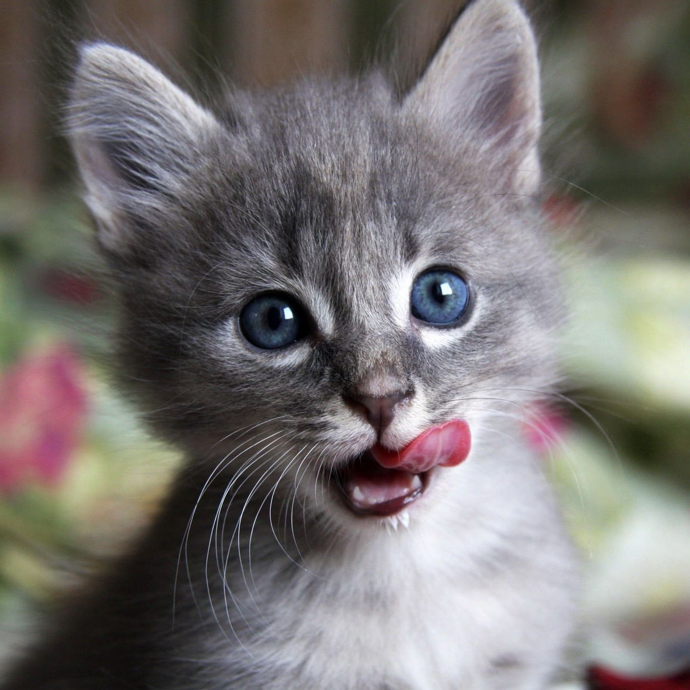

Central Limit Theorem
Learn about the central limit theorem and it's implications in this interactive tutorial.
Given a sufficiently large sample size from a population with a finite level of variance, the mean of all samples from the same population will be approximately equal to the mean of the population.
Central Limit Theorem
Before getting into further details, lets collect some data (a sample) that we'll use for the basis of this tutorial.
We went to an animal shelter and recorded the number of months it took for a cat to get adopted. In this mini-game you will try to guess how many months it took for each cat to get adopted.
We went to an animal shelter and recorded the number of months it took for a cat to get adopted. In this mini-game you will try to guess how many months it took for each cat to get adopted.

How many months before this cat was adopted?
What do those ratings mean?
These ratings follow a random distribution - every person who rates the cats will have different opinions. Even so, the probability of getting a 10 for each cat is not equal; some cats are more likely to get a higher rating than others. The ratings will not conform to a normal distribution